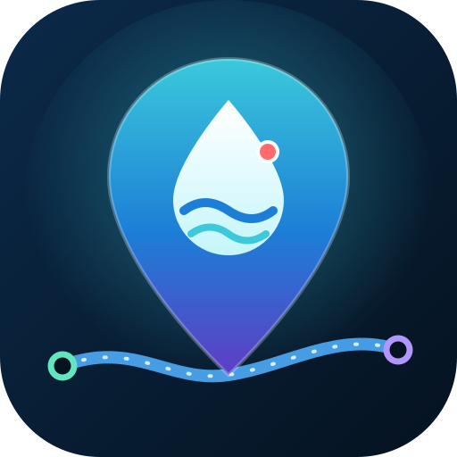

Anonim · tanpa nama, nomor HP, maupun alamat IP
Tinggi batang = jumlah kunjungan nyata per hari. Arahkan kursor ke batang untuk melihat angka dan pengunjung unik. Batang pudar = hari tanpa kunjungan.
Dari mana orang membuka WebGIS. "Aplikasi homescreen" = dibuka dari ikon yang sudah dipasang di HP/PC (pengguna tetap); "Link langsung" = mengetik/bookmark; WhatsApp/Telegram = dari link yang dibagikan.
HP biasanya dipakai di lapangan atau saat rapat, Laptop/PC dipakai di kantor untuk analisa.
Diperkirakan dari jaringan internet. Kota seperti Palembang/Jakarta sering berarti jalur operator seluler, bukan lokasi orangnya.
Tombol/fitur yang diklik pengunjung. Fitur yang jarang dipakai bisa dipromosikan atau disederhanakan.
WebGIS otomatis menyesuaikan tampilan: Penuh (perangkat kuat), Ringan, Hemat (perangkat lemah/baterai rendah).
Jumlah kunjungan per jam selama periode terpilih. Membantu menentukan kapan data perlu paling mutakhir dan kapan aman melakukan pembaruan.
"Pengunjung harian unik" menghitung satu perangkat sekali per hari. Kota diperkirakan dari jaringan internet dan bisa meleset (misalnya tercatat Jakarta atau Singapura untuk operator seluler). Data mulai tercatat sejak fitur ini dipasang, 9 November 2026. Angka utama hanya pengunjung nyata dari Indonesia; kunjungan bot/perayap, uji otomatis, salinan deploy dan akses luar negeri dihitung terpisah pada kotak "Disaring". Untuk data 9–13 November (sebelum penyaring dipasang) penyaringan dilakukan dari perkiraan kota, sehingga sebaran jam dan perangkat hari-hari itu merupakan perkiraan proporsional.